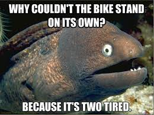
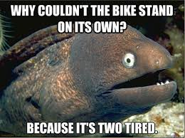
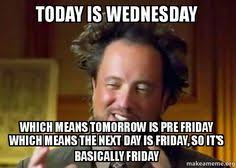
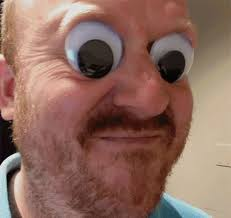
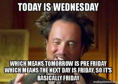
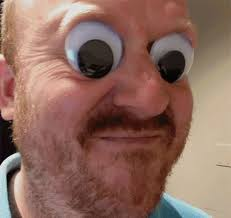

my name is Sean Knowlton
I was born in Tucson and I still live here. hopefully I will move(one day)to a place that is green like the forest. I rely like the Utah area, now that IS some ware I could live. My dad was born in Boston and I still have a lot of family there to day. I love the boston red sox the patriots and tom brady (thats also the name of my ginypig brady). My family, I love my family! I have a sister named Audrey, my younger bro is Zack (he's crazy but I still love him) and loving parents. my grandparents spoil me.
My hobby's
I have a lot of them but here are some of them, 22 shooting sports with my 4h club, I love the word yeet (yes that is a word) ,going aresofting ,playing on my pc,being good at CS:GO, saying yeet, playing golf (never sad I was good at it), and saying YEEEEEEEET and many many more hobby's for instants saying yeeet.I allso like working out,and going camping and thats just a little about me.
Pets
I have a ginepig (that I recently built a cage for) and a dog named daisy and she is a Labrador retrever and she loves her soccer ball.
hi
 

 


